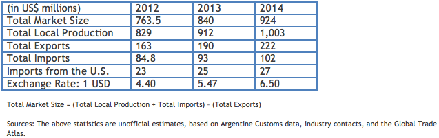

The Argentine seed industry offers numerous growth prospects and opportunities in terms of an increase in the demand for genetically modified seeds, higher commodity prices, and the expansion of agricultural land area. Planting seeds are one of the most important agricultural products imported into Argentina from the United States, totaling $23 million in 2012.
Return to Top
Alfalfa continues to be the primary seed imported from the United States, followed by yellow corn, clover, rye grass, and fescue. Likewise, seeds from vegetable crops and lawn grass seed have been in demand.
Return to Top
Off-season production of corn and soybean seed has generated positive returns in the last few years. Total exports of planting seeds for 2013 are estimated at $190 million. Total exports of planting seeds for 2012 were $163 million.
The new development of marginal areas for beef and dairy industries will mean that demand for quality forage seeds will remain high. There is a strong demand for grasses suitable for sub-tropical regions in the northern part of the country.
Return to Top
• Ministry of Agriculture, Livestock, Fishing and Foods (Spanish): http://www.minagri.gob.ar/
• Argentine Association for the Protection of Plant Property Rights (ARPOV) (Spanish): http://www.arpov.org.ar/
• Argentine Agricultural Research Institute (INTA) (Spanish): http://www.inta.gov.ar/
• Chamber of Seed Producers of the Argentine Grain Exchange (Spanish): http://www.argenseeds.com.ar/
• Argentine Seed Producers Association (ASA) (Spanish): http://www.asa.org.ar/
• Pioneer Argentina (Spanish): http://www.pioneer.com/web/site/argentina/
• Monsanto Argentina (Spanish): http://www.monsanto.com.ar/